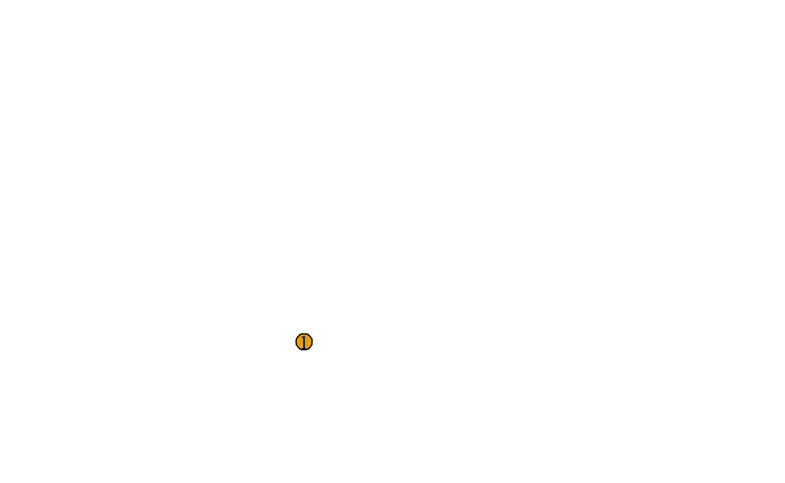
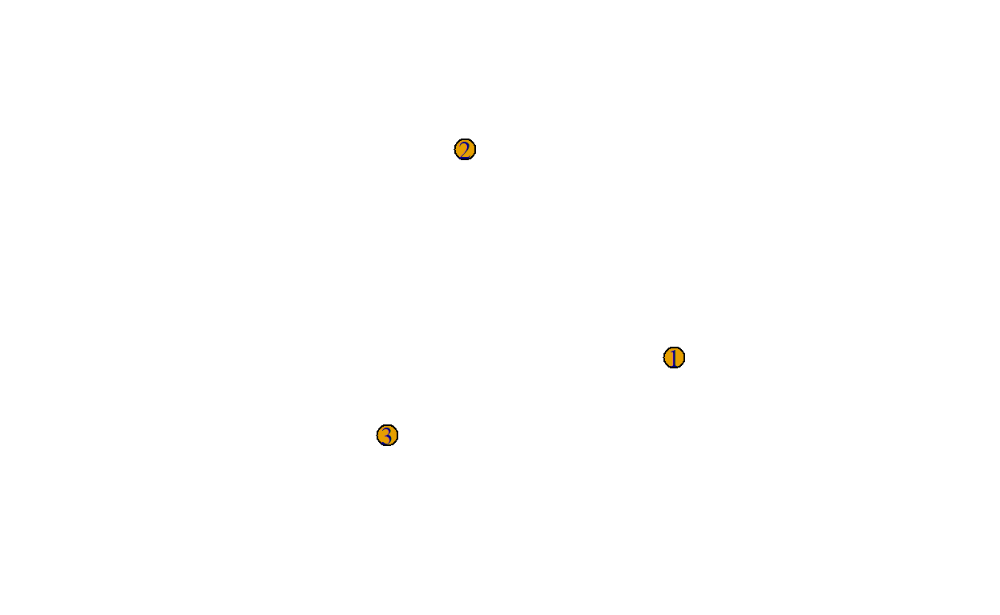
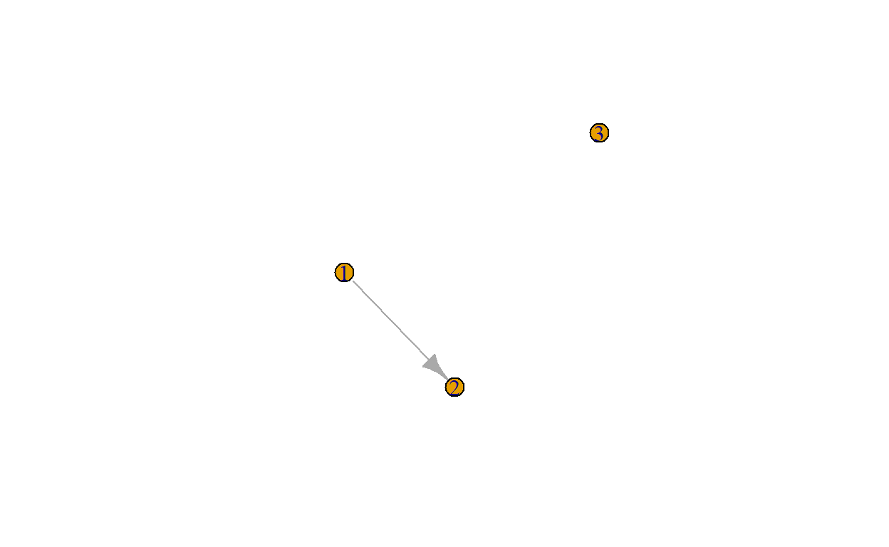
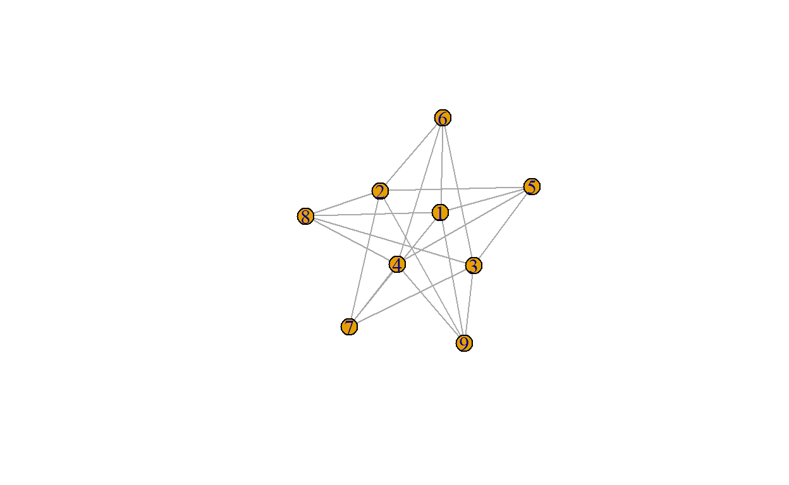
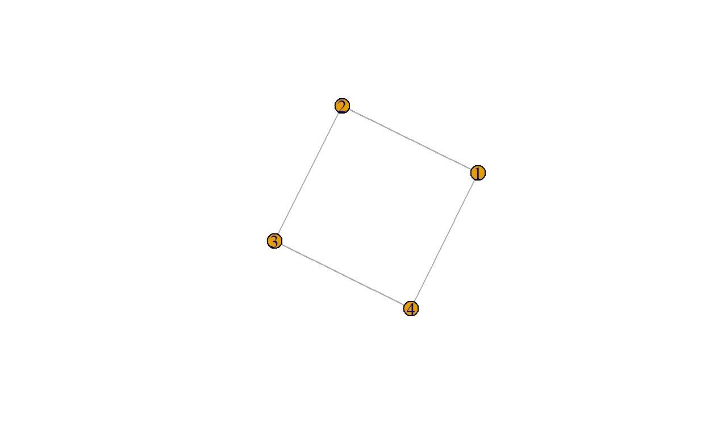
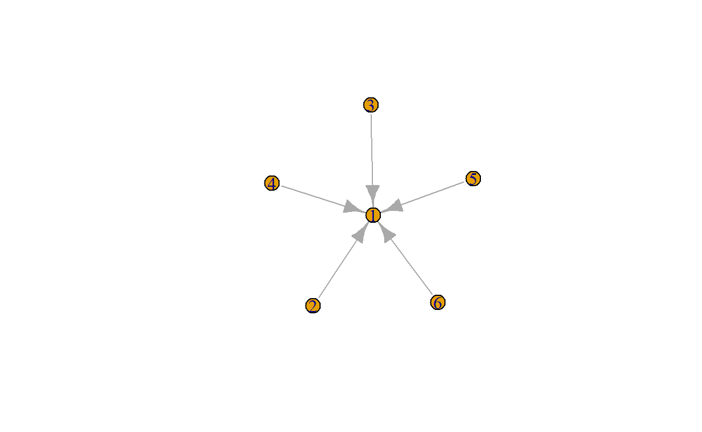
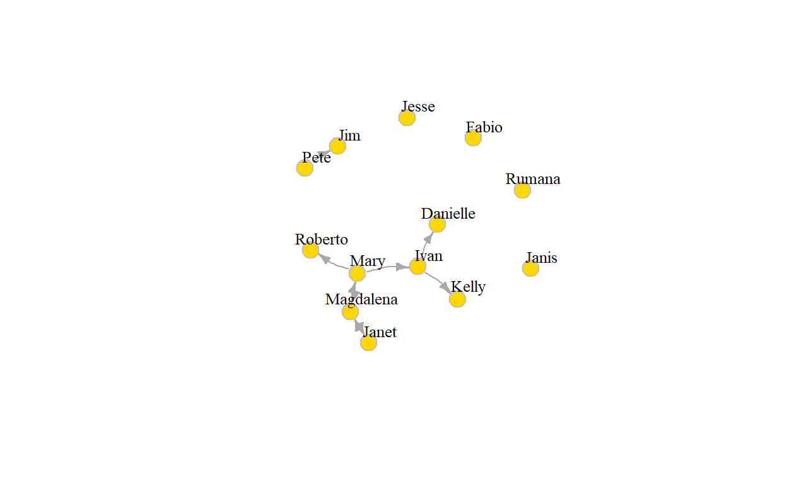

Introduction
There are two main packages in R to construct network objects.
The first is igraph. The igraph package actually has implementations in C/C++, Python, Mathematica, and R. Although the igraph functions are slightly different between these three environments, you will benefit from the code in this course if you want to use igraph in another environment at a later time.
The general igraph page is here and the extended documentation for the R version is here.
The second is the (creatively named) network package. This package implements a class of network objects that can be analyzed by packages such as sna (these packages are all part of the statnet suite of packages, that all work together). We will make use of this package a lot as well.
Unfortunately, the igraph and network network objects are not interchangeable, the objects that you create in igraph can not be used in network/sna, and vice versa. This is unfortunate, because these packages differ in their functionality, so you often might want to combine some igraph functions with some sna functions in a single analysis. Fortunately, but there are ways to move between the packages by transforming the object to fit the other package. It is a bit cumbersome, but you will have to be able to do it nonetheless.
igraph
Let’s start with the igraph package.
We can easily create an undirected network and add a few nodes and links. Nodes are called vertices and referred to by integer IDs; links are called edges.
g <- igraph::make_empty_graph()
# add one vertex
g <- igraph::add_vertices(g, 1)
plot(g)
# add two more vertices
g <- igraph::add_vertices(g, 2)
plot(g)
# add an edge from 1 -> 2
g <- igraph::add_edges(g, c(1, 2))
g## IGRAPH a1dbda8 D--- 3 1 --
## + edge from a1dbda8:
## [1] 1->2plot(g)
The code below generates an undirected graph with three edges. The numbers are interpreted as vertex IDs, so the edges are 1–>2, 2–>3, 3–>1.
g1 <- igraph::graph( edges=c(1,2, 2,3, 3, 1), n=3, directed=F )
plot(g1)
class(g1)## [1] "igraph"g1## IGRAPH a20628d U--- 3 3 --
## + edges from a20628d:
## [1] 1--2 2--3 1--3As you see, igraph creates a network object of class igraph.
g2 <- igraph::graph( c("Jane", "Ali", "Ali", "Hassan", "Jane", "Hassan")) # named vertices
# When the edge list has vertex names, the number of nodes is not needed
plot(g2)
g2## IGRAPH a21d730 DN-- 3 3 --
## + attr: name (v/c)
## + edges from a21d730 (vertex names):
## [1] Jane->Ali Ali ->Hassan Jane->HassanYou access the set of nodes (vertices), links (edges), and neighbors as follows:
igraph::V(g2)## + 3/3 vertices, named, from a21d730:
## [1] Jane Ali Hassanigraph::E(g2)## + 3/3 edges from a21d730 (vertex names):
## [1] Jane->Ali Ali ->Hassan Jane->Hassanigraph::neighbors(g2, "Jane")## + 2/3 vertices, named, from a21d730:
## [1] Ali Hassan# you can also access Jane through her ID, she is the first vertex.
# NOTE: R starts counting at 1 (while Python starts counting at 0)
igraph::neighbors(g2, 1)## + 2/3 vertices, named, from a21d730:
## [1] Ali HassanWanna loop over the nodes?
for (n in igraph::V(g2)) {
cat("The neighors of vertex", n, ":", igraph::neighbors(g2, n), "\n")
}## The neighors of vertex 1 : 2 3
## The neighors of vertex 2 : 3
## The neighors of vertex 3 :# or, with vertex names
for (n in igraph::V(g2)$name) {
cat("The neighors of vertex", n, ":", igraph::neighbors(g2, n)$name, "\n")
}## The neighors of vertex Jane : Ali Hassan
## The neighors of vertex Ali : Hassan
## The neighors of vertex Hassan :Looping over the links:
for (edge in igraph::E(g2)) {
print(igraph::E(g2)[edge])
}## + 1/3 edge from a21d730 (vertex names):
## [1] Jane->Ali
## + 1/3 edge from a21d730 (vertex names):
## [1] Ali->Hassan
## + 1/3 edge from a21d730 (vertex names):
## [1] Jane->HassanTo get the number of vertices and edges, you do the following
igraph::ecount(g2)## [1] 3igraph::vcount(g2)## [1] 3To get the partners of a given node, or just the vertices linking to or from, you can do the following (for actor “Ali)”:
igraph::neighbors(g2, 2, mode = "all") # incoming and outgoing## + 2/3 vertices, named, from a21d730:
## [1] Jane Hassanigraph::neighbors(g2, 2, mode = "in") # incoming ## + 1/3 vertex, named, from a21d730:
## [1] Janeigraph::neighbors(g2, 2, mode = "out") # outgoing## + 1/3 vertex, named, from a21d730:
## [1] HassanThe igraph package has many functions available that will generate networks with particular structures, in case you really want to start from a specific network design. Here are just a few:
plot(igraph::make_full_bipartite_graph(4, 5))
plot(igraph::make_ring(4))
plot(igraph::make_star(6))
plot(igraph::make_star(6, mode = "undirected", center = 2))
We will meet more interesting network structures later in this course. Anyway, you now have all the R code to do the equivalent to section 1.2 in the book.
Let’s move on from here.
Small graphs can also be generated using symbols in the igraph::graph_from_literal function:
- “–” for undirected tie
- “+-” or “-+” for directed ties pointing to the left or to the right
- “++” for a symmetric tie
- “:” for sets of vertices.
g3 <- igraph::graph_from_literal(Mary++Magdalena++Janet, Jim+-Pete, Mary-+Roberto,
Mary-+Ivan-+Kelly:Danielle, Jesse, Janis, Fabio, Rumana)
plot(g3, edge.arrow.size = .5, vertex.color = "gold", vertex.size = 15,
vertex.frame.color = "gray", vertex.label.color = "black",
vertex.label.cex = 0.8, vertex.label.dist = 2, edge.curved = 0.2) 
g3## IGRAPH a2bcbc5 DN-- 13 9 --
## + attr: name (v/c)
## + edges from a2bcbc5 (vertex names):
## [1] Mary ->Magdalena Mary ->Roberto Mary ->Ivan
## [4] Magdalena->Mary Magdalena->Janet Janet ->Magdalena
## [7] Pete ->Jim Ivan ->Kelly Ivan ->DanielleThis works just fine when you have small networks (or you want to generate some simple artificial networks to test your data), but is not feasible for larger networks.